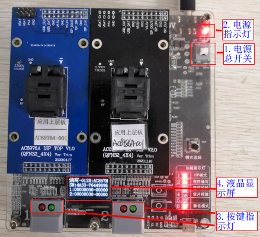
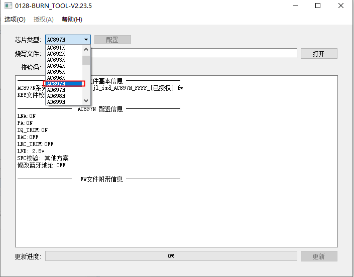
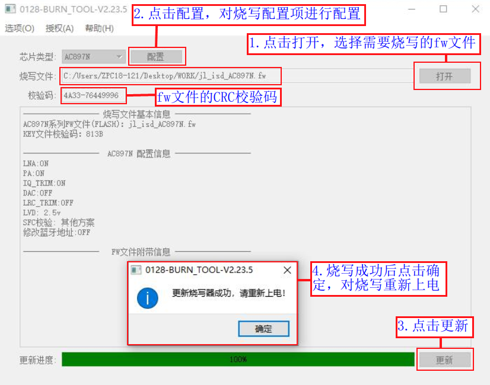
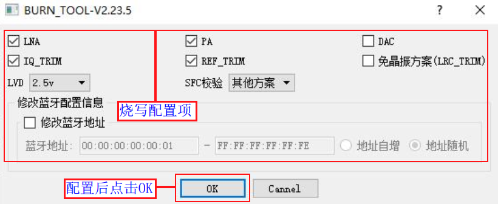
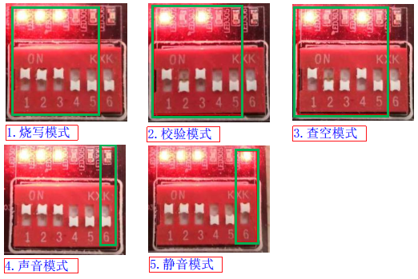
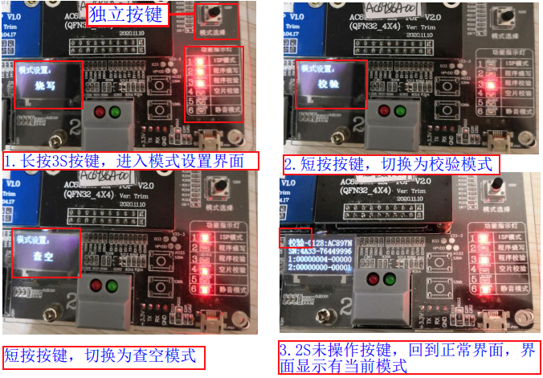
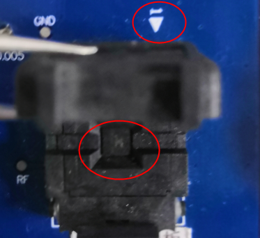
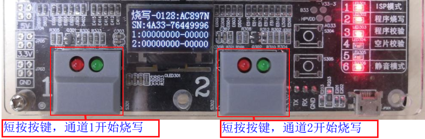
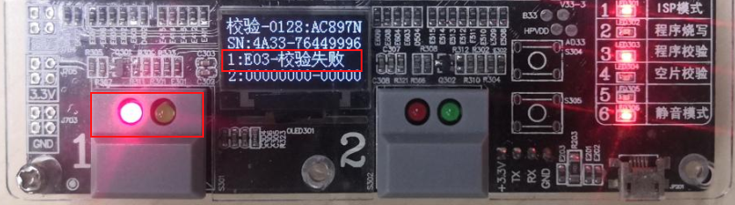

1.2. Manual Programming, Verification and Blank Check
1.2.1. Preparing the programming environment
Materials to prepare for programming:
Category |
Description |
Quantity |
|---|---|---|
PC |
1. To upgrade the programmer firmware to the required version or the latest version |
1 |
Programmer main unit |
Controls chip programming |
1 |
USB data cable |
Connects the programmer to the PC, for upgrading the programmer firmware or updating the target chip firmware |
1 |
Power adapter |
Use a power supply rated 9.0V, 2.0A or above to power the programmer |
1 |
Top board |
1. Programming bare chips: prepare a socket board for the model of the chip to be programmed |
1 or 2 |
Chips to be programmed |
Place the chips to be programmed on the socket board for the corresponding chip model for programming |
Several |
Chip firmware to be programmed |
Prepare the fw file generated by building the SDK (which includes the key file); |
1 |
1.2.2. Power on the programmer
Powering the programmer
The programmer is powered by a 9V power adapter. The power wiring is shown in Programmer power supply wiring diagram.

Programmer power supply wiring diagram
Power on the programmer
The firmware that controls the programmer is programmed before it leaves the factory, so you can power on the programmer as soon as you receive it. The steps after powering the programmer are shown in Power-on screen
[1] Press the "Main power switch" (电源总开关);
[2] After power-on, the "Power indicator light" (电源指示灯) lights up and the programmer's buzzer beeps once briefly,
[3] The red and green "Button indicator lights" (按键指示灯) of the 2 programming channels light up briefly;
[4] The "LCD display" (液晶显示屏) lights up;

Power-on screen
1.2.3. Checking and updating the programmer firmware version
The programmer firmware is the firmware of the main control chip that controls the operation of the whole programmer. Before programming target chip firmware, be sure to check whether the current programmer firmware is the latest version (except in special cases); otherwise some programming problems may occur.
Checking the current programmer version
After the programmer is powered on and has displayed the "Jieli LOGO", it displays the current programmer firmware version number for 2 seconds (the programmer firmware version number is also shown in the interface for updating the target chip firmware), as shown in Programmer firmware version display.

Programmer firmware version display
Regularly check for new versions and update the programmer firmware
If the firmware version used by the programmer is outdated, the PC tool interface for updating the target chip firmware fw file shows a corresponding update prompt. If new firmware is available, update promptly.
Open the PC tool control panel for remote upgrade of the programmer firmware to get the 3 latest programmer firmware version numbers, and select the version you need to upgrade to. For the upgrade steps, see Remote Upgrade of the Programmer Firmware.
1.2.4. Deploying the target chip firmware to the programmer
1.2.4.1. Deployment notes
Before programming, verifying or blank-checking chips, you need to deploy the programming firmware for the target chip, that is, the fw file, ufw file or key file generated by building the SDK, to the programmer. During the process, the programmer programs this firmware into the target chip, or uses it for verification and blank check. If the corresponding firmware has already been deployed to the programmer, skip the steps in the following subsections.
1.2.4.2. Opening the deployment program interface
After the programmer is powered on, proceed as shown in Opening the deployment program interface:
[1] Use the USB data cable to
connect the programmer's USB port for program updates to a USB port on the PC. The display showsPC mode(PC模式);[2] Open
This PCon the PC and find theCD Drive;[3] Right-click the "CD Drive" and open it; you will see the
burn_tool.exefile;[4] Double-click
burn_tool.exe. The deployment program interface appears, as shown in Deployment program interface;

Opening the deployment program interface

Deployment program interface
1.2.4.3. Selecting the target chip model to program
Here, deploying an fw programming file is demonstrated for the AC897N chip. So after opening the deployment program interface, when selecting the target chip model, select AC897N as the chip type in the "Chip type" (芯片类型) drop-down menu, as shown in Chip model selection interface.

Chip model selection interface
1.2.4.4. Selecting and deploying the programming file to the programmer
After selecting the model of the chip to be programmed, follow the steps shown in Deploying the fw programming file to the programmer:
[1] Click "Open" (打开) and select the fw file (a ufw file or key file also works; you can also program an authorized fw/ufw file with a programming count limit, see Authorized Programming Count Limit);
[2] Click "Configure" (配置), select the chip programming configuration items and click OK, as shown in Programming configuration items interface (the defaults are usually fine; to configure them as needed, see PC-Side Programming Options for Each Chip Model);
[3] Click the "Update" (更新) button to deploy the FW file, that is, the target chip programming firmware, to the programmer;
[4] After the programming file has been deployed successfully, the message "Programmer updated successfully, please power-cycle" (更新烧录器成功，请重新上电) appears. Click "Confirm" (确认), then power-cycle the programmer (unplug the USB data cable from the programmer, then press the "Main power switch" (电源总开关) to turn it off and press it again to turn it on).
If deployment fails, a corresponding error message is displayed. Find the cause of the error based on the message and deploy again. If deployment fails repeatedly or you run into a problem you cannot solve, contact Jieli technical support promptly.

Deploying the fw programming file to the programmer

Programming configuration items interface
1.2.5. Programmer working modes: introduction and setup
1.2.5.1. Introduction to the programmer working modes
Working mode |
Description |
|---|---|
Programming mode |
Programs the data of the firmware file deployed to the programmer, i.e. the .fw or .ufw file generated by the SDK build, or the .key file, |
Verification mode |
Compares the data of the firmware file deployed to the programmer (the .fw or .ufw file generated by the SDK build, or the .key file), the LVD, |
Blank check mode |
Checks whether the chip is blank, i.e. whether it is still in its factory state and has never been programmed with a .fw firmware file or key file data. |
Sound mode |
Turns on the buzzer sound alerts |
Mute mode |
Turns off the buzzer sound alerts |
Note
Programming modealready includes verification: after programming, any data written to the chip is read back to verify that it was programmed correctly;
In
Blank check mode, even if the checksum of a .fw file is displayed, this does not prove that the firmware programmed into the chip is complete: the blank check only reads the checksum from a certain area and displays it. Displaying the checksum during the blank check is mainly used to find the .fw file that was programmed last time, which makes programming files easier to manage. For example, if you want to know which of many fw files was programmed into the device you have, you can identify it this way and use the retrieved .fw file for production programming, testing and failure analysis;
To double-check whether the firmware programmed into the chip last time is complete and consistent with the currently deployed .fw file data and programming configuration, you must use
Verification mode;
1.2.5.2. Setting the working mode on V3.1 programmers
This version of the programmer mainly uses the DIP switches to set the working mode: DIP switches 1 to 5 act as one control unit that sets Programming, Verification or Blank check mode; DIP switch 6 acts as a separate control unit that sets the sound mode. The DIP switch settings for each working mode are shown in Setting the working mode with the DIP switches.

Setting the working mode with the DIP switches
1.2.5.3. Setting the working mode on V5.0 programmers
Setting Programming, Verification or Blank check mode
Follow the steps shown in Setting the working mode with the standalone button:
[1] Press and hold the
standalone button (mode selection button)(see the pictures in Introduction to the programmer main unit) and release it after 3s. The programmer enters the mode setting state, the display shows"Mode setting" (模式设置) and the current mode, and indicator light 1 keeps flashing;[2] Briefly press the
standalone buttonto switch the programmer mode (it cycles through Programming, Verification and Blank check);[3] If the
standalone buttonis not pressed for 2s, the currently set mode is selected and the display returns to the normal screen (before the normal screen appears, the display shows the current programmer version number for 2s). The normal screen shows the current working mode.

Setting the working mode with the standalone button
Setting the sound mode:
As shown in Setting the sound mode with the standalone button, while the display shows the normal screen, briefly press the standalone button to switch the sound mode (it toggles between Sound mode and Mute mode).

Setting the sound mode with the standalone button
1.2.6. Programming chip firmware
1.2.6.1. Preparing for programming
Before programming chip firmware, make sure you have carried out the operations in the previous 4 sections to prevent problems during programming. These include:
Power on the programmer before programming and wait for the normal ready screen (see the "Power on the programmer" section)
Confirm that the programmer firmware is the required version, or update it (see the "Checking and updating the programmer firmware version" section; check this from time to time)
Confirm that the target chip firmware in the programmer is the firmware to be programmed, or update it (see the "Deploying the target chip firmware to the programmer" section)
Confirm that the programmer's working mode is Programming mode, or set it (see the "Programmer working modes: introduction and setup" section)
After installing the top board (see "Top board introduction and installation" for how to install it), place the chip in the socket on the top board for the corresponding chip model, then close the socket lid. Chip placement is shown in Chip placement.

Chip placement
Important
The small white arrow on the top board socket marks pin 1 of the chip. Do not place the chip the wrong way round.
1.2.6.2. Starting chip programming
Once the preparation is complete, you can program the chip. If the chip is placed on the channel 1 top board, briefly press the channel 1 Start button; if the chip is placed on the channel 2 top board, briefly press the channel 2 Start button, as shown in Starting chip programming.

Starting chip programming
1.2.6.3. Determining the programming result
Determining programming success
After the Start button is briefly pressed, if
the green indicator light goes from off to on and then off again,the red indicator light stays offand the buzzer beeps once, programming has succeeded. After successful programming,the success count on the display increases by 1.For example, the display changes after successful programming on channel 1 are shown in Display changes after successful programming on channel 1.

Display changes after successful programming on channel 1
Determining programming failure
After the Start button is briefly pressed, if
the green indicator light goes from off to on and then off again, after whichthe red indicator light turns onandan error message is shownon the display, programming has failed.For example, channel 1 reports a "Communication failed" (通信失败) error after programming starts (other error types are also possible), as shown in Channel 1 programming failure display.
After the display shows an error, it returns to normal after the next successful programming or when the programmer is restarted.
Channel 1 programming failure display
Note
After a chip has been programmed successfully, you can remove it from the top board socket and mount it onto the device (SMT), or put it into the socket of a demo board or development board for product function tests. The same chip can be programmed repeatedly with a different target chip firmware, different programming options, etc.;
Chips that fail programming must not move on to subsequent production steps; the specific cause of the failure must be analyzed further;
3. For details on the status indicators and error messages, see the "Status Indicators and Error Messages" chapter;
1.2.7. Verifying chip firmware
1.2.7.1. Preparing for verification
Before verifying chip firmware, make sure you have carried out the operations in the previous 4 sections to prevent problems during verification. These include:
Power on the programmer before programming and wait for the normal ready screen (see the "Power on the programmer" section)
Confirm that the programmer firmware is the required version, or update it (see the "Checking and updating the programmer firmware version" section; check this from time to time)
Confirm that the target chip firmware in the programmer is the firmware to be verified, or update it (see the "Deploying the target chip firmware to the programmer" section)
Confirm that the programmer's working mode is Verification mode, or set it (see the "Programmer working modes: introduction and setup" section)
After installing the top board, place the chip in the socket on the top board for the corresponding chip model, then close the socket lid.
1.2.7.2. Starting chip verification
Once the preparation is complete, you can verify the chip. If the chip is placed on the channel 1 top board, briefly press the channel 1 Start button; if the chip is placed on the channel 2 top board, briefly press the channel 2 Start button. The steps are the same as in the "Starting chip programming" section.
1.2.7.3. Determining the verification result
Determining verification success
After the Start button is briefly pressed, if
the green indicator light goes from off to on and then off again,the red indicator light stays offand the buzzer beeps once, verification has succeeded. After successful verification,the success count on the display increases by 1. The display changes after successful verification are the same as after successful programming.Determining verification failure
After the Start button is briefly pressed, if
the green indicator light goes from off to on and then off again, after whichthe red indicator light turns onandan error message is shownon the display, verification has failed.For example, channel 1 reports a "Verification failed" (校验失败) error after verification starts (other error types are also possible), as shown in Channel 1 verification failure display. After the display shows an error, it returns to normal after the next successful verification or when the programmer is restarted.

Channel 1 verification failure display
1.2.8. Blank-checking chips
1.2.8.1. Preparing for the blank check
Before blank-checking a chip, make sure you have carried out the operations in the previous 4 sections to prevent problems during the blank check. These include:
Power on the programmer before programming and wait for the normal ready screen (see the "Power on the programmer" section)
Confirm that the programmer firmware is the required version, or update it (see the "Checking and updating the programmer firmware version" section; check this from time to time)
Confirm that the target chip firmware in the programmer is firmware for the corresponding chip model, or update it (see the "Deploying the target chip firmware to the programmer" section)
Confirm that the programmer's working mode is Blank check mode, or set it (see the "Programmer working modes: introduction and setup" section)
After installing the top board, place the chip in the socket on the top board for the corresponding chip model, then close the socket lid.
1.2.8.2. Starting the chip blank check
Once the preparation is complete, you can blank-check the chip. If the chip is placed on the channel 1 top board, briefly press the channel 1 Start button; if the chip is placed on the channel 2 top board, briefly press the channel 2 Start button. The steps are the same as in the "Starting chip programming" section.
1.2.8.3. Determining the blank check result
Determining blank check success
After the Start button is briefly pressed, if
the green indicator light goes from off to on and then off again,the red indicator light stays offand the buzzer beeps once, the blank check has succeeded. After a successful blank check, the display showsBlank(空片) orthe success count on the display increases by 1. A successful blank check means that the chip is blank and has never been programmed with firmware data.Determining a non-blank chip
After the Start button is briefly pressed, if
the green indicator light goes from off to on and then off again, after whichthe red indicator light turns onand the display shows the CRC16 checksum of the firmware already programmed into the chip or an error message (such asNot blank(非空片) orBlank check failed(查空失败)), the chip is not blank, i.e. it has already been programmed.For example, after the blank check starts on channel 1, the display shows a checksum (other error types are also possible), as shown in Channel 1 blank check showing the firmware checksum. After the display shows a checksum or an error, it returns to normal after the next successful blank check or when the programmer is restarted.

Channel 1 blank check showing the firmware checksum